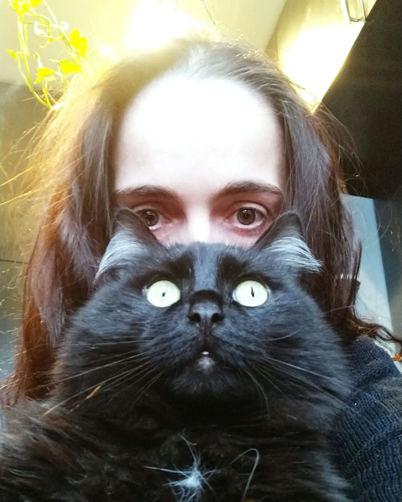

Котоводство
Каждому коту нужен дом!
КотоВодство - это базовая информация об уходе, содержании, лечении и зоопсихологии, нужная каждому котоводу.

В этой инструкции вы найдёте информацию о базовых потребностях наших хвостатых
друзей, уходе за
ними,
ветеринарии и даже немного о котопсихологии. Большинство проблем с
физическим и психическим
здоровьем
наших хвостатых подопечных возникает не по злобе, а из-за недостатка знаний.
Эта инструкция
будет
полезна не только начинающим котоводам, но и опытным котолюбам. Не забывайте, что домашние коты
полностью зависят от нас, а значит, знаний много не бывает.
Основные моменты из инструкции "КотоВодство"
- Базовые потребности и видотипичное поведение
- Безопасность
- Физиологические потребности
- Здоровье и ветеринария
- Зоопсихология
Видеозапись лекции "Основы грамотного КотоВодства и Как понять своего кота"